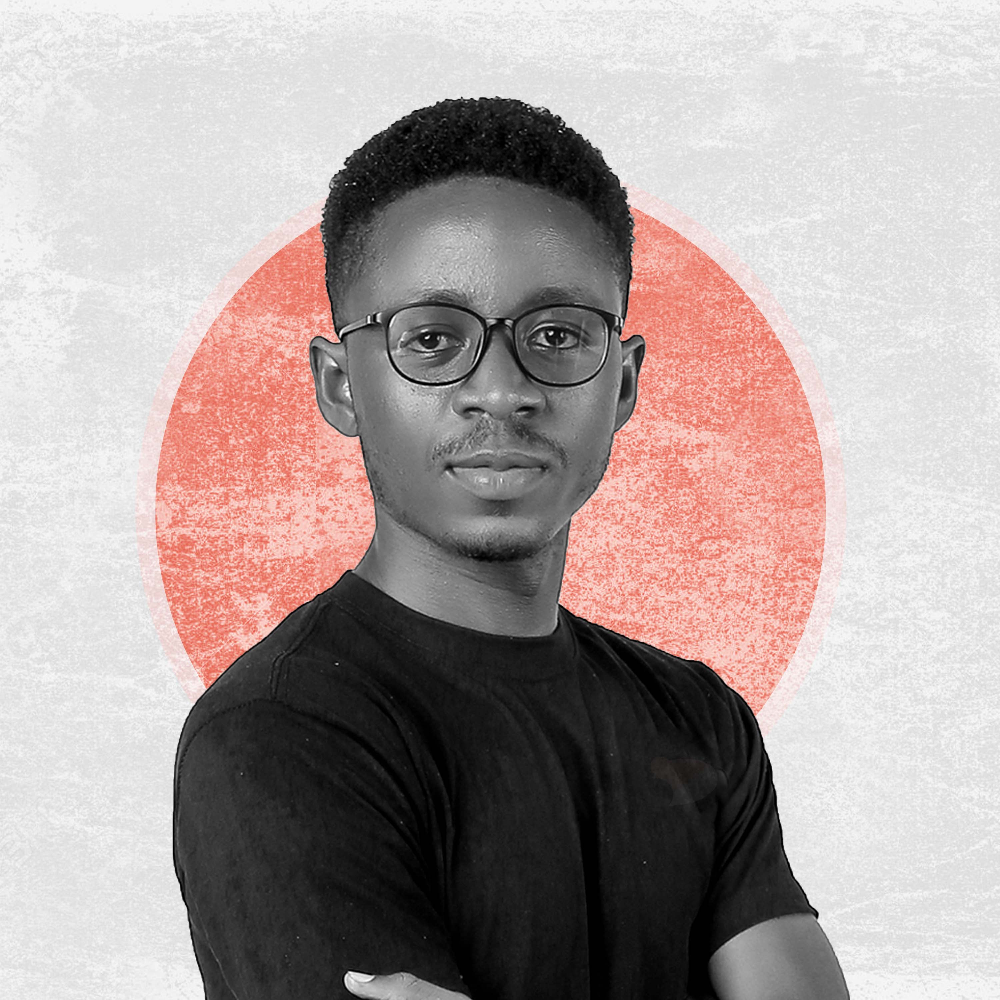

Sam
B. Morris
Creative Engineer based in Liberia
I build products and tell stories for brands who are intentional about improving the future of Africa. Stories are a major way we connect with one another and also with brands. I love to work with brands that have a real world impact that is more than just having a strong balance sheet. I'm open to expanding my client base in international markets and seeing what impact we can make together.